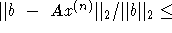
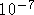
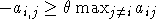
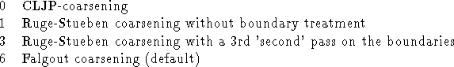
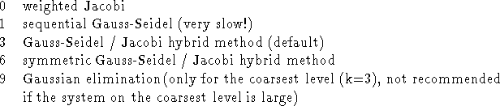
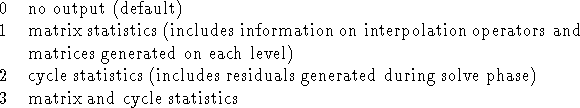

BoomerAMG is a parallel implementation of algebraic multigrid. It can be used both as a solver or as a preconditioner. The user can choose between various different parallel coarsening techniques and relaxation schemes. See [&make_named_href('', "node39.html#Henson_Yang:2000","[6]")] for a detailed description of the coarsening algorithms, the interpolation and nueemerical results. The following coarsening techniques are available:
The solver is set up and run using the following routines, where A is the matrix, b the right hand side and x the solution vector of the linear system to be solved:
#include "HYPRE_parcsr_ls.h" int HYPRE_BoomerAMGCreate(HYPRE_Solver *solver); <set certain parameters if desired > int HYPRE_BoomerAMGSetup(HYPRE_Solver solver, HYPRE_ParCSRMatrix A, HYPRE_ParVector b, HYPRE_ParVector x); int HYPRE_BoomerAMGSolve(HYPRE_Solver solver, HYPRE_ParCSRMatrix A, HYPRE_ParVector b, HYPRE_ParVector x); int HYPRE_BoomerAMGDestroy(HYPRE_Solver solver);
Parameters for setting up the code are specified using the following routines:
max_levels defines the maximal number of multigrid levels allowed. The default is 25.int HYPRE_BoomerAMGSetMaxLevels( HYPRE_Solver solver, int max_levels);
max_iter defines the maximal number of iterations allowed. The default is 20.int HYPRE_BoomerAMGSetMaxIter( HYPRE_Solver solver, int max_iter);
tol defines the tolerance needed for the stopping criterion  tol. The default for tol is  .int HYPRE_BoomerAMGSetTol( HYPRE_Solver solver, double tol);
A point i is strongly connected to j, if  , where the strong thresholdint HYPRE_BoomerAMGSetStrongThreshold( HYPRE_Solver solver, double strong_threshold);
This feature leads to a more efficient treatment of very diagonally dominant portions of the matrix. If the absolute row sum of row i weighted by the diagonal is greater than max_row_sum all dependencies of variable i are set to be weak. This feature can be switched off by setting max_row_sum to 1.0. The default is 0.9.int HYPRE_BoomerAMGSetMaxRowSum( HYPRE_Solver solver, double max_row_sum);
coarsen_type defines the coarsening used. The following options are possible:int HYPRE_BoomerAMGSetCoarsenType( HYPRE_Solver solver, int coarsen_type );

measure_type defines whether local (measure_type = 0, default) or global measures (measure_type = 1) are used within the coarsening algorithm. This feature is ignored for the CLJP and the Falgout coarsening.int HYPRE_BoomerAMGSetMeasureType( HYPRE_Solver solver, int measure_type );
num_grid_sweeps[k] defines the number of sweeps over the grid on the fine grid (k=0), the down cycle (k=1), the up cycle (k=2) and the coarse grid (k=3).int HYPRE_BoomerAMGSetNumGridSweeps( HYPRE_Solver solver, int* num_grid_sweeps );
grid_relax_type[k] defines the relaxation used on the fine grid (k=0), the down cycle (k=1), the up cycle (k=2) and the coarse grid (k=3). The following options are possible for grid_relax_type[k]:int HYPRE_BoomerAMGSetGridRelaxType( HYPRE_Solver solver, int* grid_relax_type );

grid_relax_points[i][j] defines which points are to be relaxed during the (j+1)-th sweep on the fine grid (i=0), the down cycle (i=1), the up cycle (i=2) and the coarse grid (i=3), e.g. if grid_relax_points[1][0] is -1, all points marked -1 (which are in general fine points) are relaxed on the first sweep of the down cycle. Note: grid_relax_points[3][j] needs to be 0 always, since the concept of coarse and fine points does not exist on the coarsest grid. If the user sets it to another value, it will be automatically set to 0 and a warning printed, unless the direct solver is used.int HYPRE_BoomerAMGSetGridRelaxPoints( HYPRE_Solver solver, int** grid_relax_points);
defines the relaxation weights used on each level, if weighted Jacobi is used as relaxation method. The default relaxation weight is 1.0 on each level.int HYPRE_BoomerAMGSetRelaxWeight( HYPRE_Solver solver, double* relax_weight);
where ioutdat determines whether statistics information is generated and printed. The information is printed to standard output. The following options are possible:int HYPRE_BoomerAMGSetIOutDat( HYPRE_Solver solver, int ioutdat);
